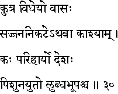
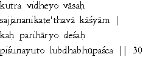

|

|
Verse 30 - Meaning:
Q: Which place is the most fitting (kutra vidheyo) for one to stay ? (vaasah)
A: The neighbourhood of virtuous men, (saj-jana - nikate - athava) or Kasi the City of Light.(kaasyaam)
Q: What (kah) place (desah) should one avoid ? (parihaaryo)
A: That one which is abounding in wicked men (pisunayuto) and (ca) ruled by an extorting and greedy ruler .(lubdha-bhuupa)
|